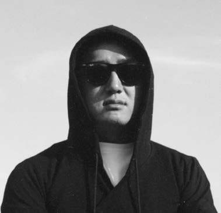
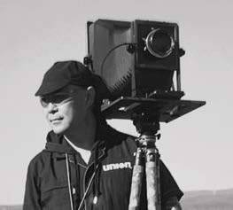

旅行、胶片与种植
LZ
曾从事媒体工作，喜欢感受旅行中的在地文化，也喜欢逛各地的菜市场。以胶片记录相遇，在种植、堆肥与朴门永续实践中，重新认识生活与土地的关系。
小红书 · 瓦尔扎扎特
查看相关作品monoloco 始于 2017 年，从社区营造出发，逐渐走向策展、文创设计与持续的艺术实践。
我们用胶片、速写和手工本记录城市，也通过共同制作，让创作进入日常。影像可持续，是连接这些探索的一条线索。

曾从事媒体工作，喜欢感受旅行中的在地文化，也喜欢逛各地的菜市场。以胶片记录相遇，在种植、堆肥与朴门永续实践中，重新认识生活与土地的关系。
小红书 · 瓦尔扎扎特
查看相关作品
认真对待画面的摄影者，也是一位骑行爱好者。从城市空间到沿途风景，用镜头记录身边的变化；在摄影与骑行之外，也保留生活里轻松幽默的一面。
小红书 · KASA
查看相关作品半路出家，边走边画。记录身边转角的观察，捕捉烟火人间的感动。以速写、照片和手工本保存生活与旅途，也让绘画进入日常使用的物件。
小红书 · 无形速写
查看相关作品我们曾在胡同里做花园、办展览、记录行走，也尝试用一间快闪咖啡馆让人相遇。那些实践留下的线索，继续进入今天的作品、工坊与物件。
欢迎交流工坊邀请、文化空间合作、展览与文创设计。
可在相应平台搜索以上账号名，与我们联系。